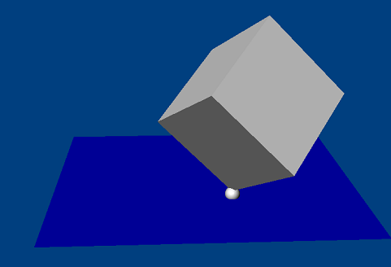

A point in plane joint constrains a point on one actor to only move
inside a plane attached to another actor. The point attached to the plane is
defined by the anchor point. The joint's axis specifies the plane
normal.
An example for a point in plane joint is a magnet on a refrigerator.
DOFs removed: 1
DOFs remaining: 5
|
Parameter |
Description |
| actor[0] | First actor |
| actor[1] | Second actor |
| localAnchor[0] | Point attached to the plane on the first actor. |
| localAnchor[1] | Point attached to the plane on the second actor (the attachment points should coincide). |
| localAxis[0] | The plane normal in the first actor's frame. |
| localAxis[1] | The plane normal in the second actor's frame (should match localAxis[0] in the global frame). |
NOTE: When setting localAnchor[] it is generally convenient to
use setGlobalAnchor() to set the anchor with a world space point.
NOTE: When setting localAxis[] it is inconvenient to use
setGlobalAxis() to set the axis with a world space axis.
NOTE: When specifying the joint axis it is also important to specify
the localNormal[] which should be orthogonal to the localAxis[]. The
localNormal[] is needed to specify joint limits.
NxPointInPlaneJointDesc pipDesc;
pipDesc.actor[0] = actor0;
pipDesc.actor[1] = actor1;
pipDesc.setGlobalAnchor(globalAnchor); //Point attached to plane.
pipDesc.setGlobalAxis(globalAxis); //Point plane normal.
pipDesc.jointFlags |= NX_JF_COLLISION_ENABLED; //Enable collision detection between each actor.
NxPointInPlaneJoint *pipJoint=(NxPointInPlaneJoint*)gScene->createJoint(pipDesc);